Using Server to manage a study
Work in progress
This article is currently being written, and is not yet complete. If you require support or assistance with this topic, please contact the project team directly.
Summary:
Tutorial on using Server
prerequisites:
none.
Duration:
1 hourTable of Contents
- Introducing Network Canvas Server
- Pairing a Field Device Running Interviewer with Server
- Some Guidance on Pairing
- Importing a Protocol in Interviewer
- Exporting and Managing Data in Interviewer
- Managing and Exporting Data in Server
Introducing Network Canvas Server
Server is an optional companion program to Interviewer and Architect.
Server is used to:
- Ensure the same interview protocol is deployed on multiple devices,
- Manage the data from multiple devices in a single location,
- Securely store data on a lab computer,
- Monitor the progress of the study in the field,
- Display brief data summaries on key protocol variables, and
- Export the data of multiple interview files in a format suitable for analysis.
Server is not required to run a Network Canvas study. Protocols can be designed in Architect and opened directly in the Interviewer application, which may be sufficient for small studies using a single device. However, if your study entails working with many cases on multiple devices and maintaining your case files in a single location, Server will be a useful component to your project workflows.
In Server, you can back up your case files while conducting research in the field. Through the secure pairing process (detailed below) Server allows you to securely transmit a copy of your data directly to your lab device. If a network connection is unavailable when you conclude an interview, you are also able to save a copy of your data on the field device and transmit the data immediately to Server once a connection can be restored.
Server is particularly useful when you have multiple devices in the field that all need to transmit interview data to a single location. Each device can be connected to a single instance of Server, which allows you to view cases as they are uploaded and monitor the progress of your project in real time. From this same instance of Server, you are able to export all of your social network data in a format suitable for analysis in standard network and statistical software packages.
| Key Concepts: Encryption for Data Security |
|---|
| Server is a desktop program run by the researcher on their own computer. Getting data from Interviewer into Server requires “pairing”. To pair, Server produces a unique encryption key that must be manually entered into the Interviewer application running on a field device. Once paired, Interviewer is able to securely transmit data collected in the field directly to Server. Utilizing Server allows you to avoid using third party servers, such as Dropbox or Google Drive, and instead transfer your data directly to a computer with full-disk encryption (such as FileVault on Mac or BitLocker on Windows). Transferring data to Server in this way is an example of peer-to-peer connection whereby only your field device and your copy of Server are able to access your data. |
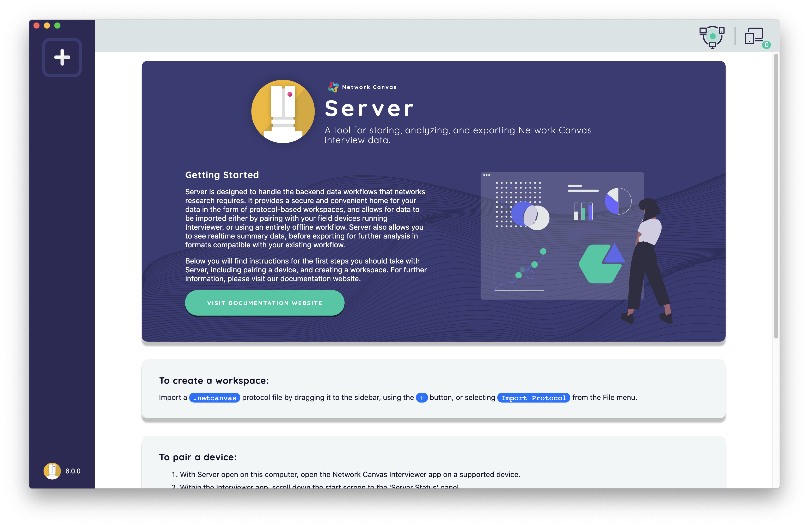
The start screen of Server provides instructions for how to create a workspace for your protocol and how to pair a device to facilitate secure encrypted data transmission. The icons in the top right corner of the screen also provide important details about the network connectivity of the computer running Server. These details can be used to manually pair Server to Interviewer field devices if necessary (details on manual pairing below).
Importing a Protocol to Server
A .netcanvas protocol file can be imported into Server by 1) dragging the file directly into the sidebar of the Server, 2) using the + button to open a file dialog to manually select the file, or 3) selecting ‘Import Protocol’ from the file menu to browse and select your file.
Once imported, Server will create a dedicated workspace with an “overview dashboard” for this protocol file. This process occurs for every protocol you import, allowing you to have multiple protocols / studies running in parallel in Server. Each unique overview dashboard is navigable by selecting the appropriate protocol initials on the side bar.

After a protocol is imported into Server, it is ready to be deployed to Interviewer on your field device(s) once secure pairing is completed. To preserve the quality of your data, it is not possible to change most of the details of a protocol once in use. If a protocol is in the field and the question names and ordering are changed it will make it difficult, if not impossible, to export all this data in a single table.
Every time you export interview data to Server, these data will immediately update and display on the overview dashboard linked to the specific protocol.
| Key Concept: The overview dashboard |
|---|
| The overview dashboard displays key details about your study and updates in real time as new interview data are uploaded. The dashboard will show details like the name of the protocol, the number of interviews completed and summary statistics from your study, such as the number of alters named per interview. This dashboard allows you to monitor the progress of your social network studies as well as help you identify potential issues in the data, such as an interviewee who nominates far more or fewer alters than the others. The ‘cards’ that display such information on the dashboard can be reordered by dragging, and toggled on and off in the “Settings” tab. The “Export Data” tab allows you to determine export file type and content, and the “Manage Cases” tab allows you to view a complete list of all cases exported to Server associated with a particular study protocol. |
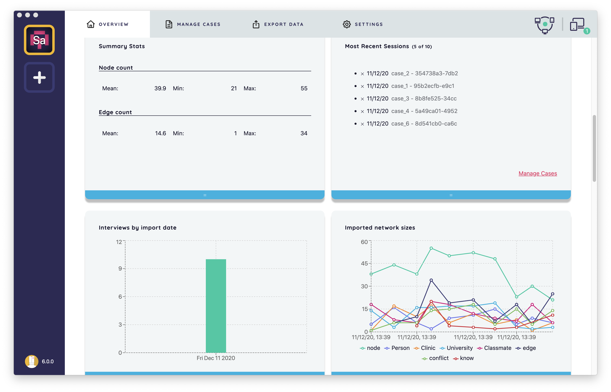
Once your interview protocol is imported, the next step is to securely pair Server with your field device(s). Pairing Server with your field device(s) establishes a secure connection that allows you to 1) deploy your protocol to the Interviewer application running on the field device(s), and 2) securely transmit data collected back to the Server for monitoring and export.
Note: a ‘field device’ is any device that collects data using Interviewer. It could be a tablet or the very same computer running Server.
Pairing a Field Device Running Interviewer with Server
To use Server with a field device, you will first have to pair the device with Server. Pairing requires exchanging encryption keys between Server and the field device. Once paired, you can download a protocol from Server to Interviewer and upload data collected in Interviewer back to Server.
To begin, make sure you have both Interviewer and Server programs open and running on the same network. With Interviewer open on your field device, scroll down to the ‘Server Status’ panel at the bottom of the start screen. Interviewer will automatically search for any Servers available on the same network. This process is called ‘automatic discovery.’ If Interviewer detects an instance of Server, it will appear as a card on the panel displaying the name of the computer, IP address, and network on which the Server program is running.
To trigger the pairing process, click the card. The Interviewer screen will then show a message that the pairing request has been initiated and must now be acknowledged within the Server app.
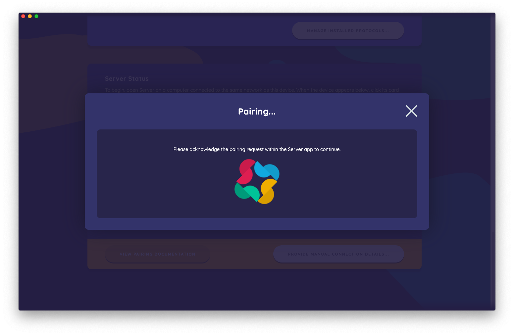
Next, you will acknowledge the request to pair the devices by clicking the pink “Pair with Device” button in Server.
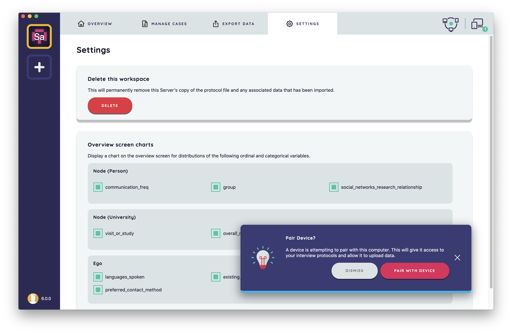
Once the request is acknowledged, Server will produce a unique 16 character encryption code that must be typed into the Interviewer app in order for the devices to pair successfully.
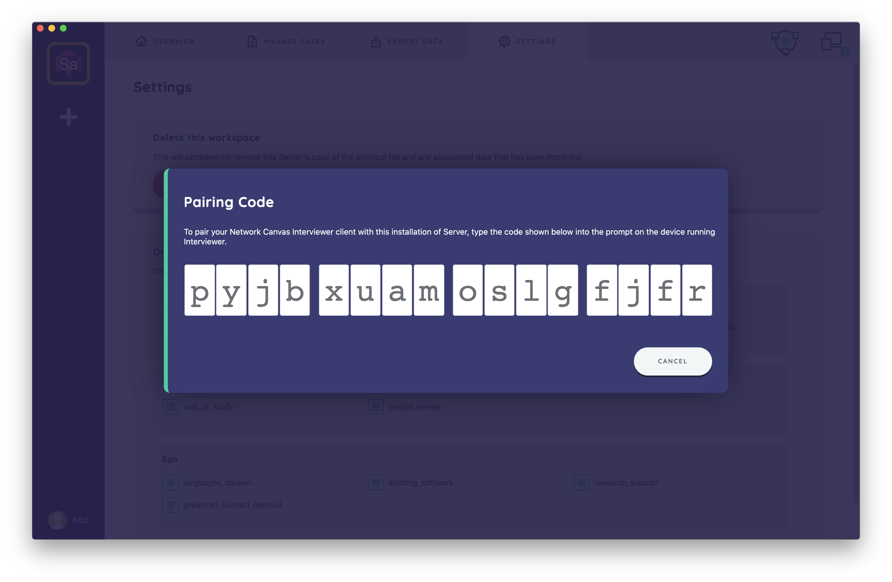
The encryption code produced by Server must now be typed into the dialog appearing in Interviewer.
Note: once the encryption code is provided by Server, you have 30 seconds to submit it to Interviewer before the pairing window will time out. If that window passes, you can reinitiate the pairing process or else pair manually.
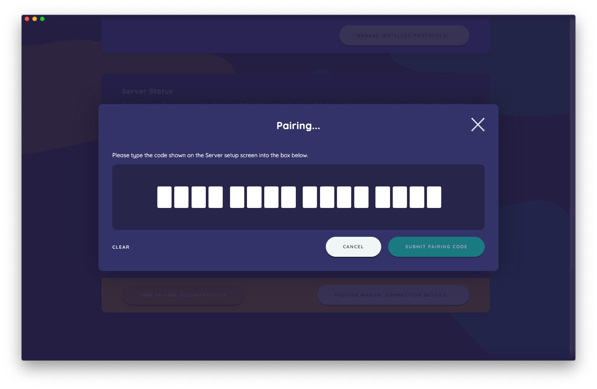
After you submit the encryption code in Interviewer, you will see notifications on both apps that the pairing was completed. Once paired, Interviewer can fetch protocols from Server and upload data back to Server.
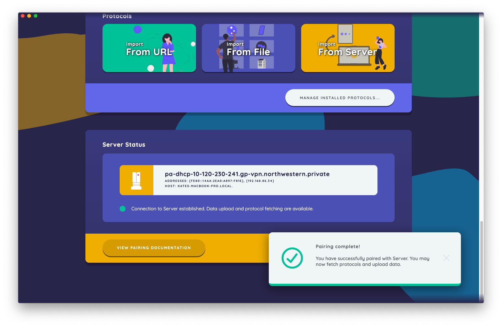
| Key Concept: Automatic Discovery & Manual Pairing |
|---|
| Automatic discovery is a feature that allows Interviewer to find Server automatically so long as both devices in question are on the same network connection (i.e. the same WiFi or wired Ethernet connection). This feature is available on both Windows and Mac computers, but not Linux. If automatic discovery fails or is unavailable (which can occur if you are on a highly secured network), you can manually facilitate the pairing process between Server and the field device running Interviewer. To manually pair, select the white “provide manual connection details” button on the bottom right corner of the “Server Status” panel in Interviewer. You will be prompted to enter the Server IP address and Pairing Port number, both of which can be found by clicking on the network status icon in the top right corner Server. Once these details are provided, the field device will search for Server to pair. Problem solving: If you cannot reach Server using automatic discovery or the manual pairing steps, try the following: 1) make sure Server is open, 2) restart Server and Interviewer on their respective devices (note: restarting will not drop data), 3) contact your network administrator or refer to the details of the error message for further troubleshooting tips. Some details that might help your network administrator: Server uses the Bonjour protocol and requires multicast DNS packets to be able to pass through the network. |
Some Guidance on Pairing
-
A field device can only pair with one Server at any given time, but a Server can deploy multiple protocols and be paired with multiple field devices simultaneously. If you want to pair with a new instance of Server, the connection to the formerly paired Server will be removed. Protocols that exist on the device will not removed, nor will any cases that have not been uploaded.
-
You can see what devices are paired with Server by clicking on the ‘devices’ icon in the upper right corner of the app. From there, you can check to see what devices are paired and remove any devices which should not be paired. Note: cleaning out old paired devices is not necessary nor will maintaining a list of old devices on Server affect performance.
-
If a field device is not paired with a Server before the interview, you can pair with it at a later time. This can be done from the start screen of Interviewer by going to the “Server Status” panel and initiating the pairing process through automatic discovery or pairing manually. Please note that the protocol must have already been uploaded to Server even if the device is not currently paired. You cannot “push” a protocol upstream to Server, only download a protocol that already exists and upload a new interview case.
-
Server will not enforce unique Case IDs. Instead, there is an internally generated UID which will be unique for all cases. Distinguishing cases based on Case ID is the interviewer’s responsibility.
Importing a Protocol in Interviewer
There are three ways to import a protocol in Interviewer: from a URL, from a file, and from Server.

To fetch a protocol from a URL, click the “Import from URL” button on the start screen of Interviewer under the “Protocols” panel. A dialog will appear where you can enter the URL where your protocol is hosted.
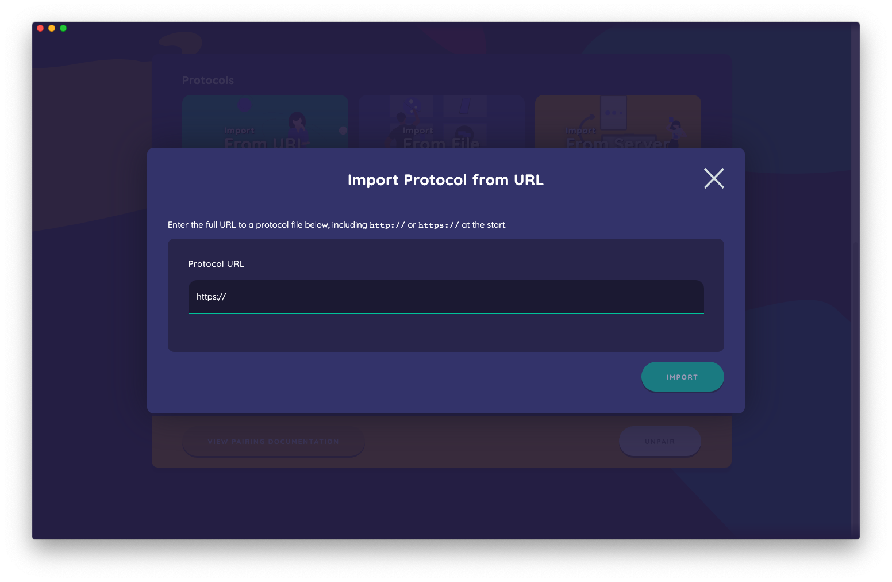
To import a protocol as a file, click the “Import from File” button. A new dialog will appear that allows you to browse for the file you want to import. When you locate the file, click “open” to import the protocol into Interviewer.
Note: remember only .netcanvas files can be read by Network Canvas applications.
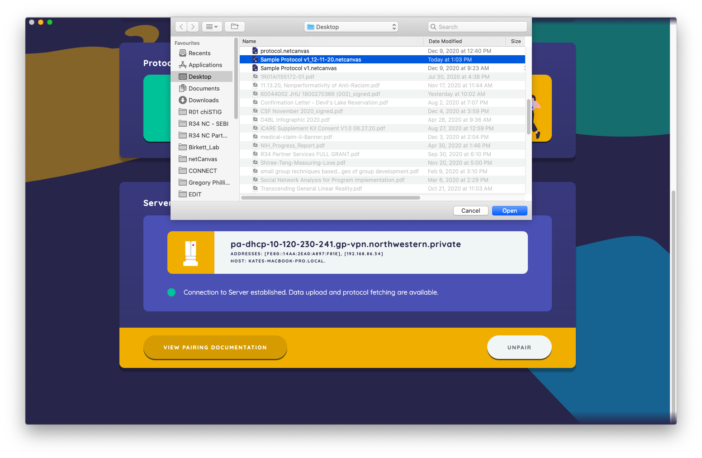
To import a protocol from Server, click the “Import from Server” button. You will then see a dialog containing all protocols currently uploaded to the instance of Server to which you are paired. Each protocol will display as a card. Click the card of whichever protocol you wish to import.

Once you have imported a protocol to Interviewer, you will be able to view it displayed as a card under the “Start a New Interview” panel on the start screen. Click on the protocol you wish to use to collect interview data.
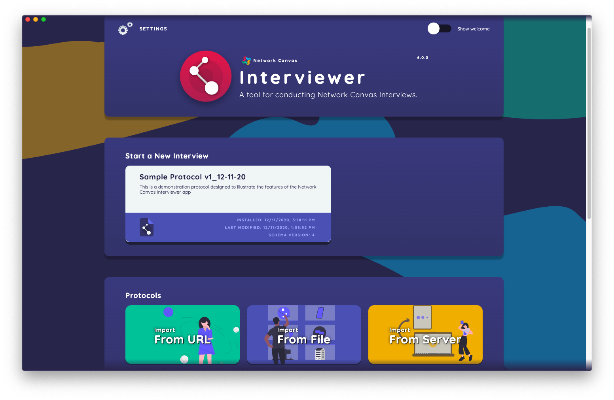
Exporting and Managing Data in Interviewer
All interviews completed in Interviewer will appear as cards in the “Export & Manage Interview Data” of the app start screen. Each card represents a unique interview session and contains:
- the case ID,
- the name of the protocol used to conduct the interview,
- the date and time the interview was initiated,
- the date and time the interview was completed,
- the percentage complete, and
- the export status of the interview data.
In this panel, cases can be sorted by “last changed”, “case ID”, or “progress.” You can also filter cases by case ID.
Case Selection
Cases can be selected individually by tapping on the card. You can also select all unexported cases or select all cases by toggling the corresponding switches in the bottom right of the panel to “on.”
Once cases are selected, there are three actions you can complete from this panel: 1) delete selected cases, 2) export selected cases to Server, and 3) export selected cases to a file. Each action has a corresponding button at the bottom of the panel.
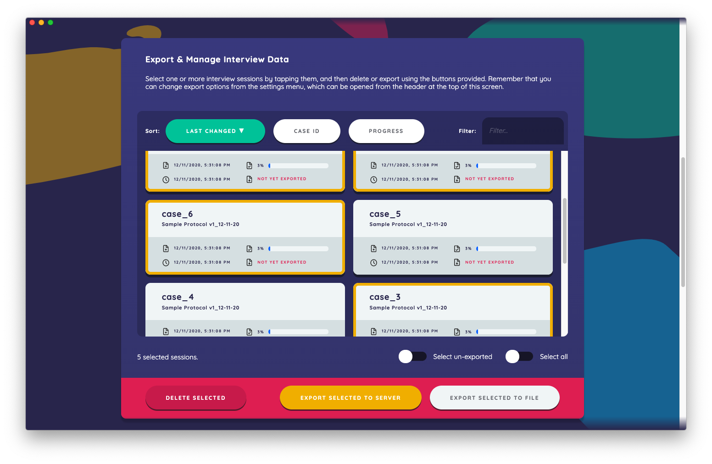
Deleting selected cases from Interviewer permanently deletes the data, so only complete this action if you are absolutely sure that your data have already been saved in a secure location or that you will not be requiring the data from these cases.
When you export selected cases to Server, Interviewer will indicate whether the upload was successful. You can also cross check the data was successfully uploaded to Server by viewing the overview dashboard for the protocol workspace you are using, which will show the case IDs in real time.
If you export selected cases to a file, a dialog will appear for you to save the zip to a location of your choice.
Before exporting interview data to a file from Interviewer, be sure the ‘Data Export Options’ are configured to meet your needs. By default, interview data from interviewer will export in GraphML unless you toggle the CSV export option. Configure data export options in the Settings menu by clicking the gears icon in the top left of the start screen.
Managing and Exporting Data in Server
Server’s overview dashboards allow you to monitor data quality and project progress for each of your studies. The overview dashboard of each protocol workspace tracks the total number of nodes (across all node types) as well as some average node statistics and the date the interview was uploaded. It will also give a list of the five most recent cases that have been uploaded.
Manage Cases
Under the “Manage Cases” tab you can find the complete list of uploaded cases for the study protocol. You can use this list to cross check the uploaded cases from your devices. Cases can also be deleted from Server by selecting the checkbox next to the case and clicking the green “Delete Selected Cases” button at the top of the case list.
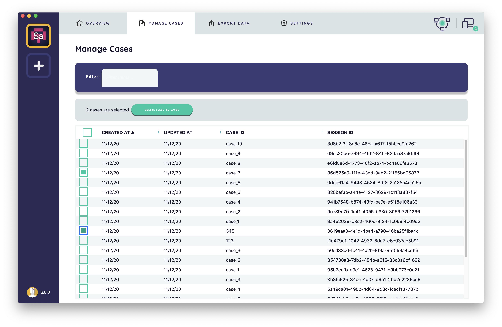
Export Data
Every completed interview can be exported from Server under the “Export Data” tab. Under this tab you can: 1) select one or more preferred data export formats (CSV and GraphML), 2) choose export options, and 3) select CSV specific file export options.

Settings
As noted above, the “Settings” tab is where you are able to toggle “on” or “off” the presence of specific study metrics on the overview dashboard of the protocol workspace. From this tab, you can also delete a workspace.
Note: deleting a workspace will permanently remove a copy of the protocol file and any associated data that has been imported from Server.
File Type
A CSV file is a comma separated file of values. This is readable as a table (or series of tables) in Excel, LibreOffice, Keynote, and other tabular programs. The CSV version also complies with the egor package standard. This is a specification for egocentric data in R. A GraphML file is a file that is compliant with many social network analysis programs including UCINET, Gephi, NodeXL, Pajek, Visone, ORA and others. While the CSV files will have separate files for edges, egos and alters, the GraphML file contains data on ego, alters, and edges in the same file. This means it cannot be tabular (i.e. used in Excel) but it can still be effectively read by using the network analysis packages above.
We recommend entering some test data in Interviewer and exporting it before going into the field. This is to confirm your data structure is as expected.
Interview Networks
Networks can either be seen as individual cases or as part of one large set of nodes and edges. The option to “Merge Sessions by Protocol” under the “Export Data” tab will produce a consolidated file for all the cases in the data on a per-protocol basis. If this option is not selected, the file export will produce a folder with a separate file for each of the interviews completed. This will include all the data for that case. The filename will be the name of the case followed by the unique system ID for that case.
- Ego file: This will have one row per ego, with ego-level variables and some summary statistics. The key will be caseID_uid
- Alter file: This will have one row per alter (i.e. per nominated node). Alters will have their own unique ID. The alters can be linked to their respective ego through the key caseID_uid
- Edge file: This will have one row per relationship. Each row will have a key to link to ego (caseID_uid), the ID of alter 1, the ID of alter 2, and any edge-level variables.
While we try to make the export of data as painless as possible, complex data often requires considerable data wrangling nonetheless. For example, if you have two node types (e.g., “Person” and “Place”), then they will both exist in any exported data. If you only want networks between people, then you will have to manually remove the other place nodes. We cannot overstate how important it is to test the collection and export of these data before going into the field. Being unable, for example, to distinguish whether a node was nominated from one prompt or another is possible but might seriously impede analysis. Consider utilizing the data export features in Server to view your data before your study begins.